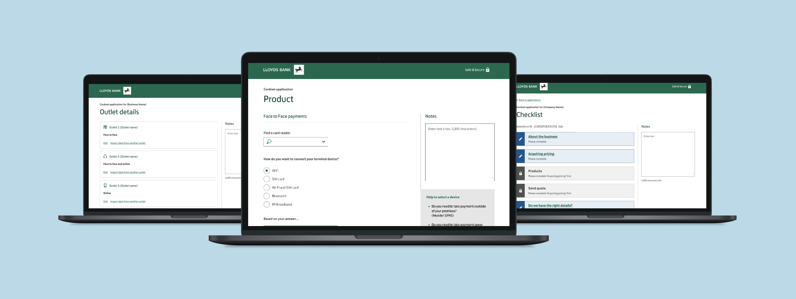
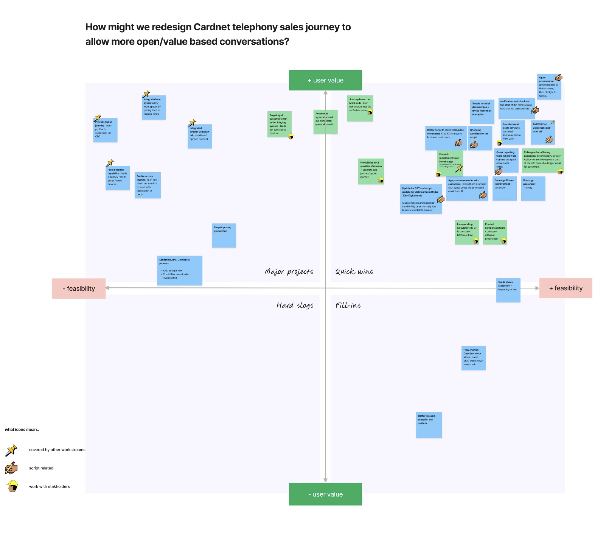
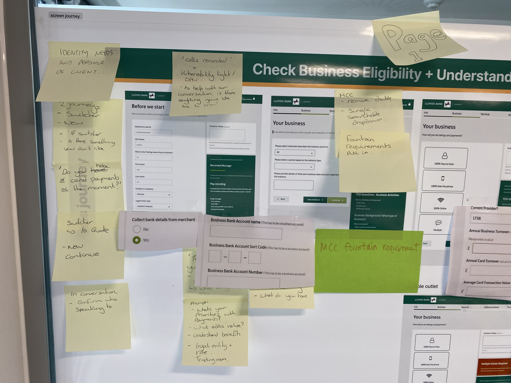
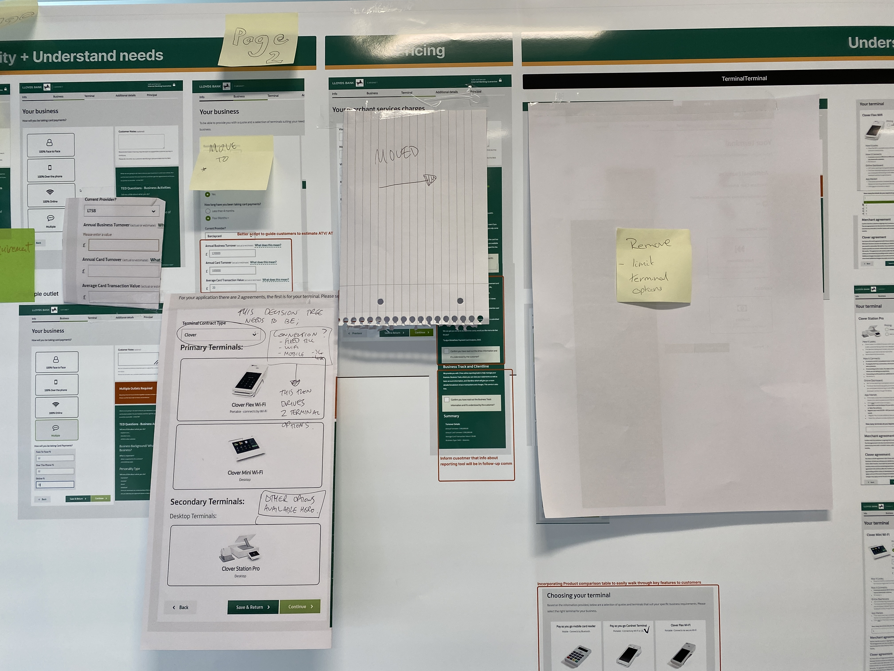
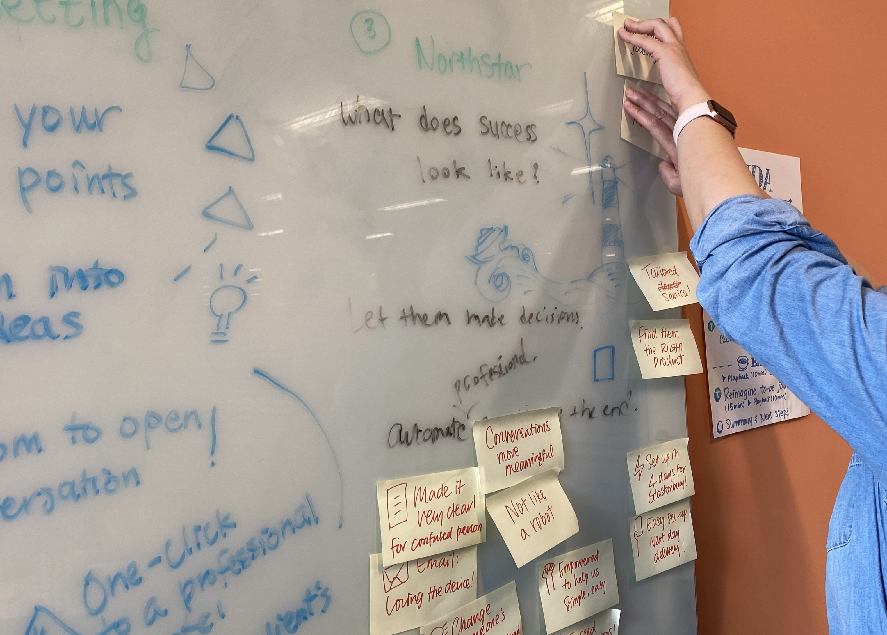
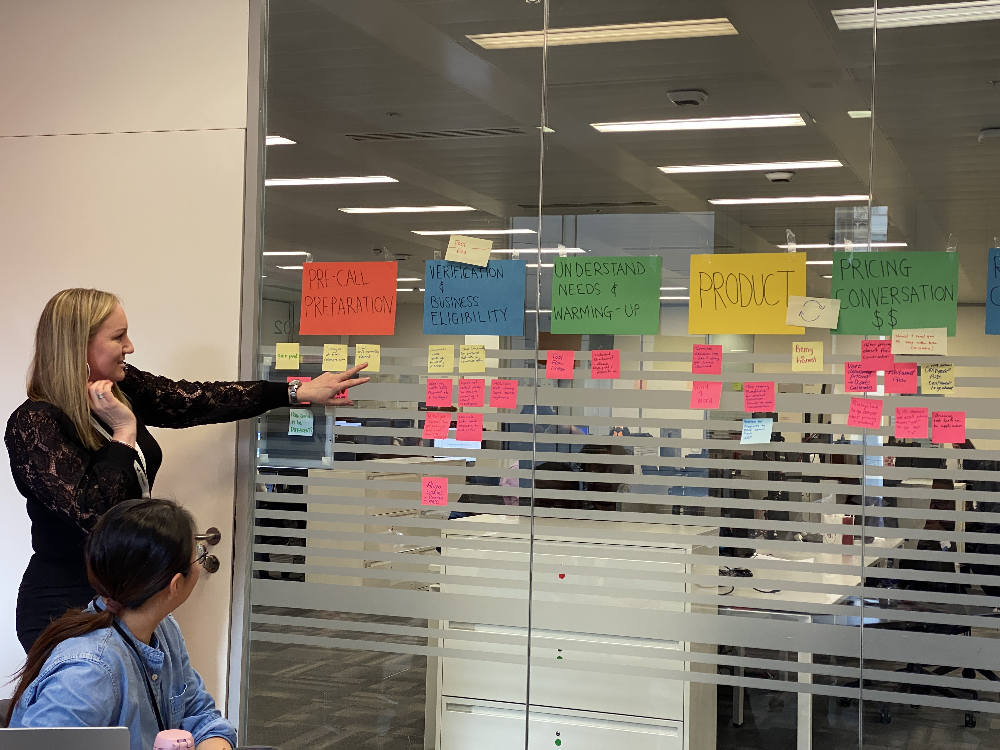
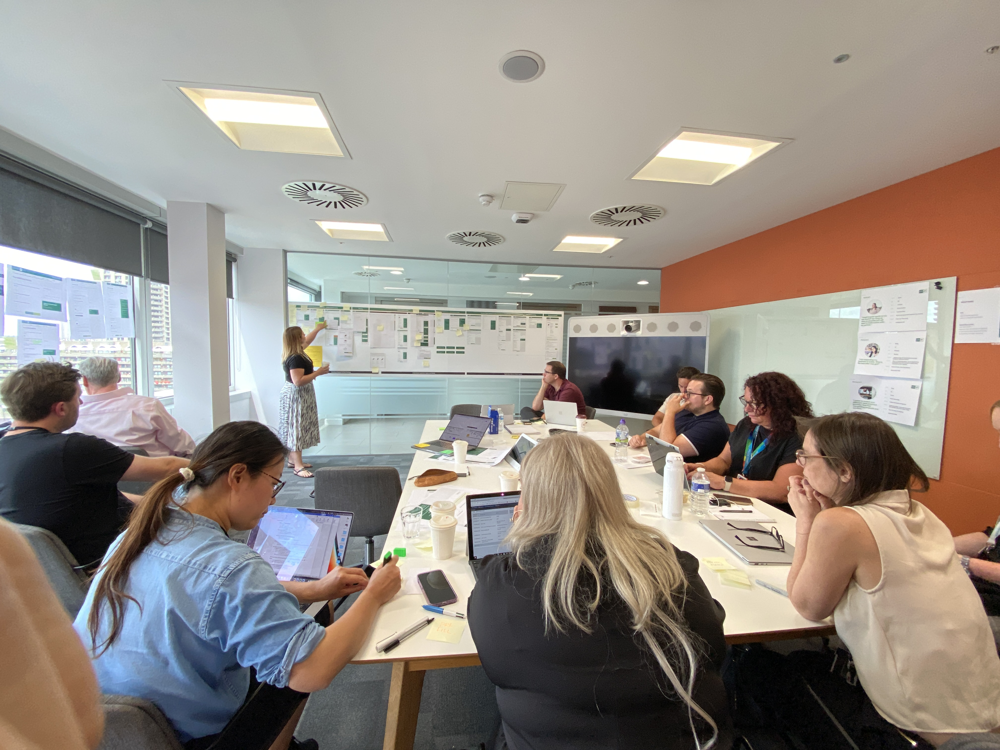
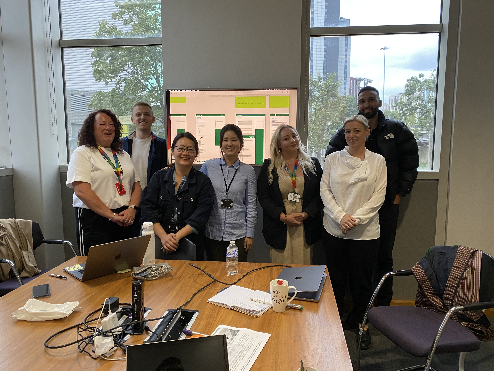
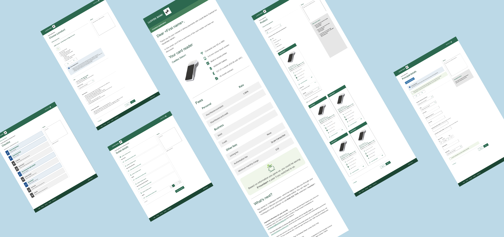

Cardnet is a joint venture between Lloyds Banking Group and Fiserv, offering merchants a comprehensive suite of card payment services — from physical terminals and virtual POS to e-commerce payment gateways.
Client Development Centre (CDC), Product, Engineering

Scroll
The challenge
Less than 1 in 2 clients onboarded felt positive about their Cardnet experience. The telephony sales and onboarding journey was high-friction, overly scripted, and fragmented across disconnected tools—making it hard for colleagues to build rapport and impossible for customers to track what was happening.
<1 in 2
clients felt positive about their Cardnet onboarding experience
28 min
average call duration before redesign
What customers were saying
"Lots of information to absorb and your agent walked through it extremely fast."
"Administration overload. Too many instructions. Very disjointed — emails from no less than 8 different addresses over the course of 5 weeks."
The opportunity
How might we optimise the telephony sales experience with quick and easy wins for both customers and CDC colleagues? Three questions shaped our direction:
💬
How might we customise conversation flow based on customer needs?
🤝
How might we create better interactions with customers for higher onboarding rates?
⚡
How might we get to quote quicker for a smoother customer journey?

Opportunity mapping — plotting ideas across user value and feasibility axes to prioritise quick wins, major projects, and fill-ins for the Cardnet telephony sales redesign.
Process
Discovery — listening to real calls
I started by conducting call listening sessions and contextual inquiry in Leeds and Basildon with telephony colleagues, observing live calls and sales and mapping the as-is journey to surface where friction was really occurring — for both the colleague and the customer.

Deep-dive research — observing telephony colleagues in Leeds during live calls to map real friction points in the existing journey.

Prototype review on the wall — early screen flows annotated with colleague feedback during deep-dive sessions in Leeds.
Discovery workshops
I facilitated a series of co-creation and discovery workshops with telephony colleagues, stakeholders from operation and product, and cross-functional contributors. These sessions moved from mapping pain points to defining a shared north star and generating prioritised ideas.

Discovery workshop — cross-functional team mapping the existing Cardnet telephony journey, identifying pain points across each stage.

North star ideation — colleagues defining what success looks like for the redesigned journey: "not like a robot," "conversations more meaningful," "empowered to help us."
Journey stage mapping — organising the telephony flow into Pre-call Preparation, Verification, Understand Needs, Product, Pricing, and Follow-up stages.The cross-functional workshop team — bringing together telephony colleagues, design, product, and risk to align on the future journey.
"The breakthrough came from letting colleagues shape the script structure — they knew exactly where rigid compliance ordering broke natural rapport."
Co-creation & prototyping
Working closely with the CDC team, I co-created and iterated on the redesigned onboarding tool — integrating fragmented systems, simplifying the product decision tree, and building a templated quote email that colleagues could send directly from the tool. Prototypes were tested with both colleagues and customers in two rounds of user testing.

Co-creation session — CDC colleagues and the design team working together to shape the redesigned onboarding journey, screens, and conversation guides.

Second round of testing with sales colleagues — simulating a live onboarding call to validate the conversation flow end to end.
What we delivered
A redesigned end-to-end onboarding tool for colleagues, built around natural conversation rather than rigid compliance ordering — with every component validated by the people who would use it daily.

Key screens from the redesigned onboarding tool — from guided product selection and outlet details through to the integrated checklist, principal details form, eCommerce product view, and templated customer quote email.
Key deliverables
✓ Redesigned onboarding tool with integrated credit risk requirements (previously fragmented across tools)
✓ Templated customer quote email with embedded pricing matrix for consistent communication
✓ Simplified guided terminal decision tree replacing legacy product selection
✓ Updated conversation guides aligned to natural call flow
✓ Measurement framework tracking lead volume, sales conversion, and time spent
Impact
50%
Reduction in time to quote (5–10 mins saved)
30%
Reduction in time to complete application
5 of 12
Colleague touchpoints removed from the journey
Customer feedback
"I can see everything on one page! And there is the picture of the device too. It's good to have the rates there as I couldn't catch all of them while on the call."
"I like that I can get back to the same person — it's good to know he will be there to support and answer questions."
— Customer, user test feedback
Colleague feedback
"Showing this quote email to customers will make us more competitive, especially when other players can send a user-friendly quote — this would add to our credibility."
— Colleague, user test feedback
Reflection
This project reinforced that the best service design happens when you design with the people doing the work — not just for them. The telephony sales colleagues who interact with customers in daily basis knew exactly where the script broke down; my role was creating the space and structure for their expertise to shape the solution.
The challenge wasn't just redesigning a tool — it was redesigning human to human interaction. Moving from rigid compliance-first ordering to conversation-first design required building trust with risk and compliance teams, and demonstrating that natural conversation and regulatory requirements aren't mutually exclusive.
Back to all work
View all selected work
Return to the portfolio homepage to explore all case studies.